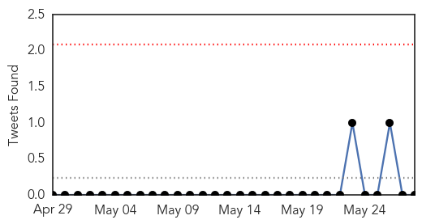
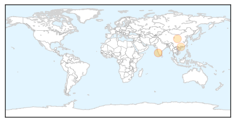
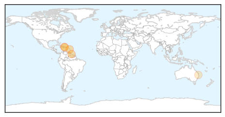

Influenza
30-Day Web Trend
0 alerts, 0 warnings
30-Day Twitter Trend
0 alerts, 0 warnings

Article Locations
Article Confidences
Top Articles:
Top Tweets:
-
No tweets found for May 28, 2014
Chikungunya
30-Day Web Trend
4 alerts, 6 warnings

30-Day Twitter Trend
2 alerts, 0 warnings

Article Locations
Article Confidences

Top Articles:
- 1.000
- Mosquito-borne chikungunya virus spreads in the Caribbean
- 0.999
- Two Chikungunya fever cases confirmed
- 0.993
- Painful and rapid spread of new virus in Caribbean
- 0.760
- Medina orders all Government agencies to fight chikungunya
- 0.661
- Mosquito invasion: Queensland scientists breed aggressive Asian tiger mosquito
Top Tweets:
-
No tweets found for May 28, 2014